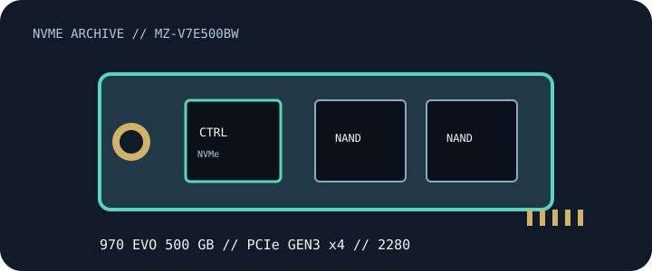

[ PCIE 3.0 X4 NVME // IDENTIFIED PRODUCT ]
Samsung 970 EVO 500 GB
500 GB M.2 2280, bare module; PCIe 3.0 x4; NVMe 1.3 NVMe SSD. Exact manufacturer SKU MZ-V7E500BW. Capacity-specific manufacturer ratings and model compatibility notes follow. Peak performance is not a guaranteed sustained result.

IDENTIFICATION: Samsung 970 EVO — 500 GB, complete SKU MZ-V7E500BW. Verify label, suffix, hardware revision and firmware; similarly named OEM, regional, heatsink and capacity variants may differ.
Manufacturer-identified specifications
| Product / exact SKU | Samsung 970 EVO 500 GB — MZ-V7E500BW |
|---|---|
| Capacity / form factor | 500 GB; M.2 2280, bare module. |
| Interface / host lanes | PCIe 3.0 x4; NVMe 1.3. Link speed negotiates to the host slot, CPU/chipset lane allocation and platform firmware; verify the system manual. |
| Protocol | NVMe; product revision where identified in manufacturer documentation. Confirm firmware/feature support for OEM and region-specific variants. |
| Sequential performance / endurance | Up to 3,400 MB/s read and 2,300 MB/s write; endurance 300 TBW. Manufacturer-rated maxima under stated conditions, not independent test results or guaranteed sustained speeds. |
| Controller | Samsung Phoenix controller |
| NAND / media | Samsung V-NAND 3-bit MLC (TLC) |
| Thermal / service detail | Samsung Dynamic Thermal Guard monitors drive temperature and can manage performance under thermal load. This bare M.2 module has no tall factory heatsink; maintain airflow and use a compatible host M.2 cover only with correct thermal-pad contact. |
Host, firmware & installation compatibility
- M.2 2280 M-key, PCIe 3.0 x4, NVMe 1.3. A later-generation x4 NVMe socket can negotiate a lower link speed when the host supports NVMe, but verify UEFI NVMe boot support, lane sharing and firmware in the host manual. Samsung Magician availability and firmware support depend on drive identity, host OS and revision; verify the label before updating.
- Confirm the motherboard/laptop manual for M-key NVMe signaling, 2280 length, single/double-sided clearance, PCIe lane sharing and BIOS/UEFI boot support. An M.2 socket may be SATA-only.
- Check OS NVMe driver support and backup/recovery options before migrating a boot drive. Back up data before drive firmware updates; use only the manufacturer utility and firmware version matched to the full SKU/revision.
- Provide the airflow and heatsink clearance noted above. Do not stack thermal covers or remove factory labels/heatsinks unless the vendor service instructions permit it; avoid hot-plugging an M.2 module.
Model-specific manufacturer references
- Samsung 970 EVO 500 GB — model and capacity specificationManufacturer source for product-family or support documentation. Confirm the complete SKU, capacity table, hardware/firmware revision and current compatibility for the physical drive.
- Samsung Semiconductor — SSD product documents and downloadsManufacturer source for product-family or support documentation. Confirm the complete SKU, capacity table, hardware/firmware revision and current compatibility for the physical drive.
- NVM Express — specificationsProtocol reference only; not a drive-specific specification or compatibility guarantee.
Maximum sequential rates, endurance and thermal behavior depend on workload, firmware, cache state and host cooling. Check current manufacturer documents for exact revision and warranty terms before deployment.